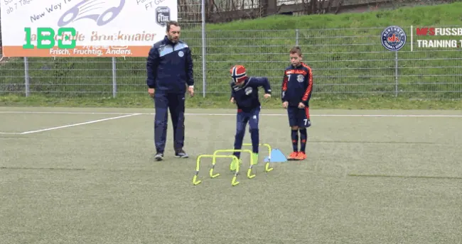
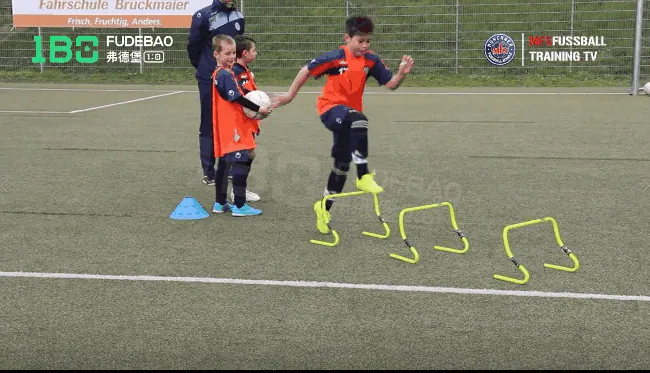
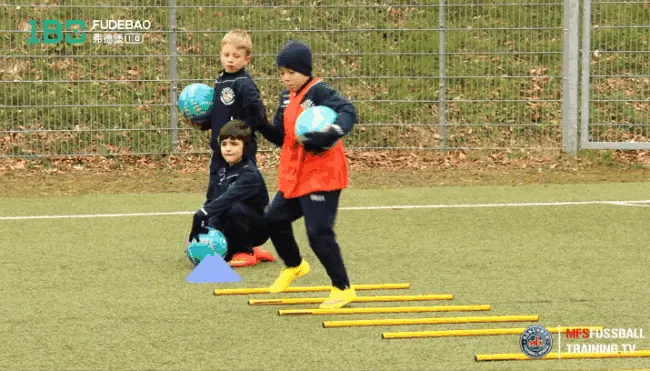
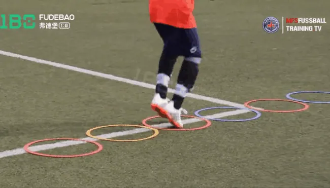
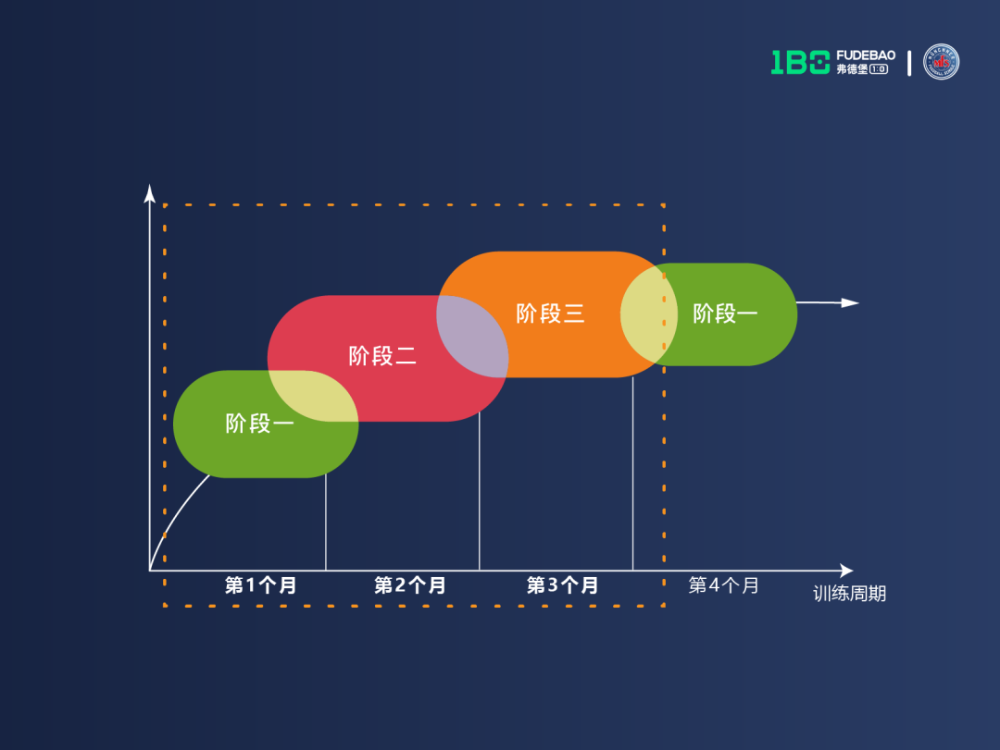

对于速度训练的必要性，我们在之前的文章中已经进行了阐述。
今天，我们从更宏观的层面上，给大家分享一下孩子们速度训练的整体周期与计划。

针对速度训练，慕尼黑足球学校开发出了“三阶段模型”。
第一阶段是基础阶段，顾名思义，基础阶段是为了让球员们的身体做好准备，是针对少儿肌肉系统稳定性和基础力量，让肌肉先适应基础的跳跃，为后面两个阶段打好基础。


这个阶段主要以非周期性动作的练习为主，不要进行周期性的跑步动作。
第二阶段就要开始周期性动作的练习，目的是培养周期性动作的稳固程度，也就是要开始真正意义上的跑步练习了。
这个阶段我们可以从最基础的跑步姿势开始，在跑步中可以流畅的摆臂、抬腿、蹬地，很标准的完成跑跳动作。

可以从最基础的跨栏跑练习开始，帮助孩子掌握正确的跑步姿势
另一个重点则是提升球员的脚下频率与冲刺速度。足球中的跑步速度对步频的要求更高，更快的步频意味着你有更多次的处理球的机会，比如梅西，他的很多过人动作都是建立在高步频的基础上的。


TIPS:
周期性运动是指有单一的结构动作，动作环节相对较少，例如跑步（其中的摆臂，蹬伸）、游泳、划船等。
而非周期性运动将几种单一的动作混合起来，例如足球中带球跑变向后射门，它的整个过程不具有周期性，没有将单一动作环节的重复
第三阶段，目的是要帮助球员形成复杂动作的神经联系、提高技能的储备量以便学习复杂技术动作，提高协调性和时空感知的能力。训练的重点是身体协调性、跑动中的变向能力、反应速度与动作速度。

着重说一下，在反应速度的练习中，教练要尽量给球员视觉上的刺激信号，而不是用声音发出信号。
有些教练在训练球员反应速度时使用的是声音信号，比如听见哨声后球员启动，但在实际比赛中，球场环境嘈杂，教练在场边的喊叫声场上球员根本听不到，球员再场上更多是依赖自己的视觉收集信息进行判断，因此再反应训练中我们要给予球员视觉上的刺激，比如可以把球高高抛起，球落地的一瞬间就是启动信号，或者可以进行颜色反应练习。
上面这个结合反应能力的练习可以作为参考
说完了三个阶段，再来说说大家最关心的速度训练的训练周期与频率。
我们最好在孩子12岁神经系统发育完全之前就开始进行速度训练，对于6-12岁的孩子，他们每周会进行2-3次的训练，这种情况下，MFS认为最理想的速度训练频率是每周进行1次速度练习，可以单独安排，也可以跟其他的常规训练穿插在一起。
我们可以以12次训练，也就是三个月为一个速度训练的周期，每周训练1次，每月训练4次。
- 第一个月给孩子安排第一阶段与第二阶段的练习，分别单独进行跳跃动作与跑动动作的练习。
- 第二个月安排第二阶段与第三阶段的练习，重点还是在步频与冲刺速度的提升上面，但也要加入一些反应速度和协调性相关的内容。
- 第三个月进行第三阶段与第一阶段的练习，第三个月进行的第一阶段练习与第一个月相比应该是“加强版的”，比如我们可以提升栏架的高度、或者要求孩子落地时重心放的更低等。

三个月周期结束，我们可以在中间暂停一周速度练习，然后再开始下一个周期。每个周期结束后都要监测球员的变化，最开始的训练带来的提升应该是十分明显的，时刻关注球员的变化，循序渐进提升训练难度。
如此，整个培养过程中是按照人体神经和骨骼肌系统发育的规律，技术动作由易到难的原则进行安排。就像拼积木一样，先把最小的模块组装起来（建立单一动作的神经联系），动作从身体局部单一动作过渡到全身性的训练，最终让球员能在提升速度的同时，合理的完成兼具灵活、稳定的复杂动作。

文字与图片版权归各自权利人所有；排版根据抓取内容整理。